Assistant Professor
Assistant Professor
Andrew Boutros is an Assistant Professor in the Department of Electrical and Computer Engineering at the University of Waterloo. His research aims to build more efficient reconfigurable computing hardware that is easier and faster to program. His interests include architecture and CAD for FPGAs, emerging forms of reconfigurable hardware, and deep learning hardware systems.
Andrew received his BSc in Electronics Engineering from the German University in Cairo and his MASc and PhD from the University of Toronto. Before and during his PhD, Andrew was a researcher at Intel Labs and Intel’s Programmable Solutions Group (now Altera). He also spent two years at MangoBoost, a startup developing data processing units for datacenter infrastructure acceleration, where he established and led its Toronto office before joining the University of Waterloo.
I am Egyptian and currently live in Canada. Since my undergraduate studies, I have studied and worked across three continents and four countries. I am the father of a beautiful daughter, Ayla, and husband to a loving wife, Sarah. If you have written a paper with me or asked me for feedback on a presentation, you will know that I am extremely meticulous about figures and organization—apologies if that gets on your nerves!
Outside work, I enjoy reading historical fiction, watching soccer, and playing chess, even though I am not very good at it!
Working up the tree of my academic family was quite interesting! Thanks to the Mathematics Genealogy Project and Sergey Gribok for their help with this side quest. Historical academic relationships predate modern doctoral supervision and may represent mentorship rather than formal advising; some institutional and degree-year records are incomplete. Send me an email if you find something I should correct or add to this tree.
Search or select a person to highlight their lineage. Drag to pan and use the control buttons to zoom in/out.
Select a person to highlight their academic ancestry.
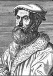
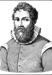
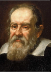
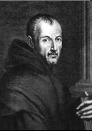
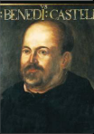
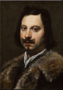
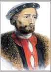
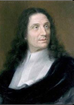
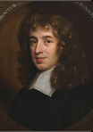
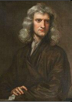
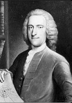
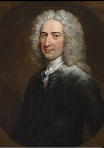
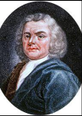
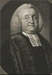
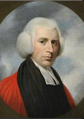
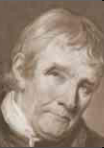
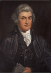
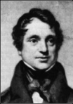
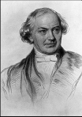
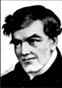
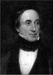
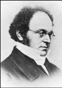
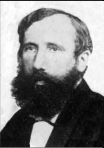
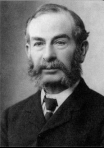
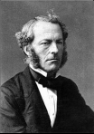
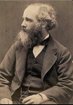
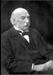
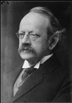
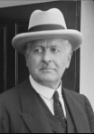
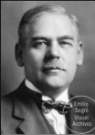
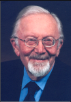
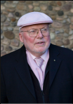
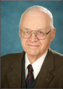
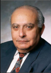
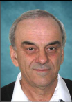
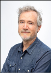
PhD Student
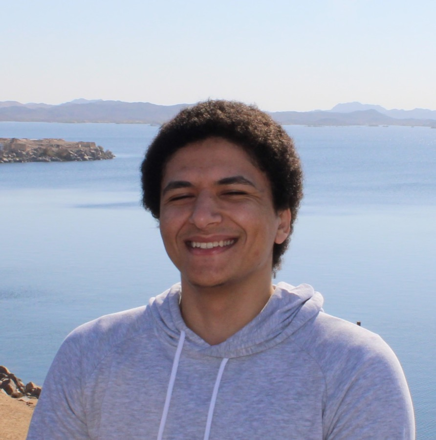
MASc Student
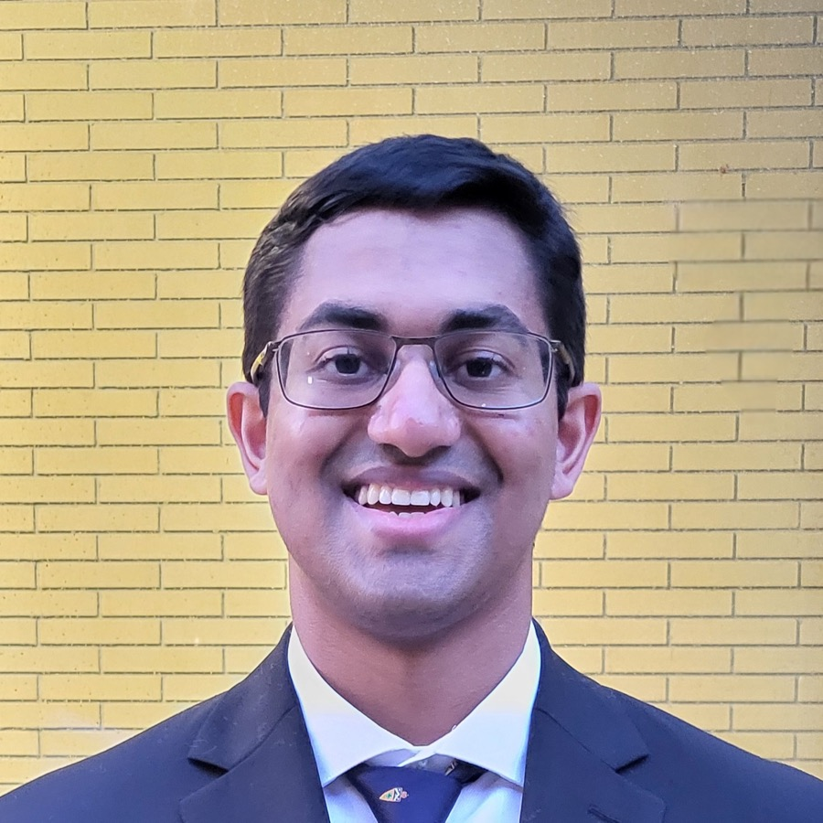
MASc Student
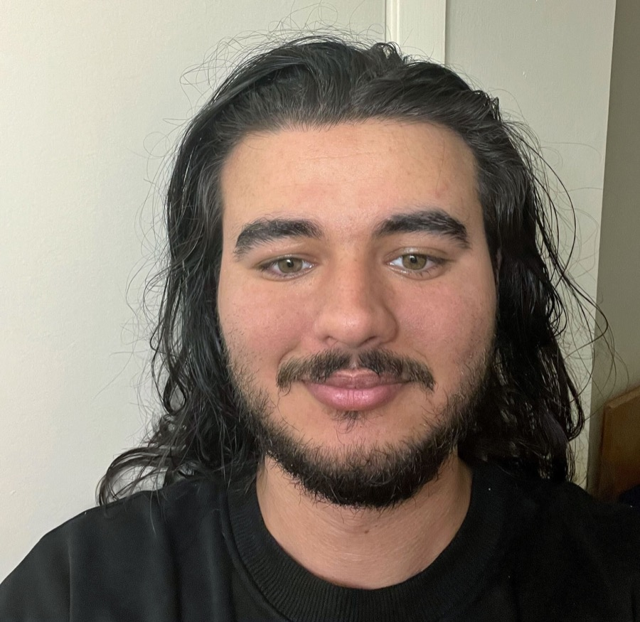
PhD Student
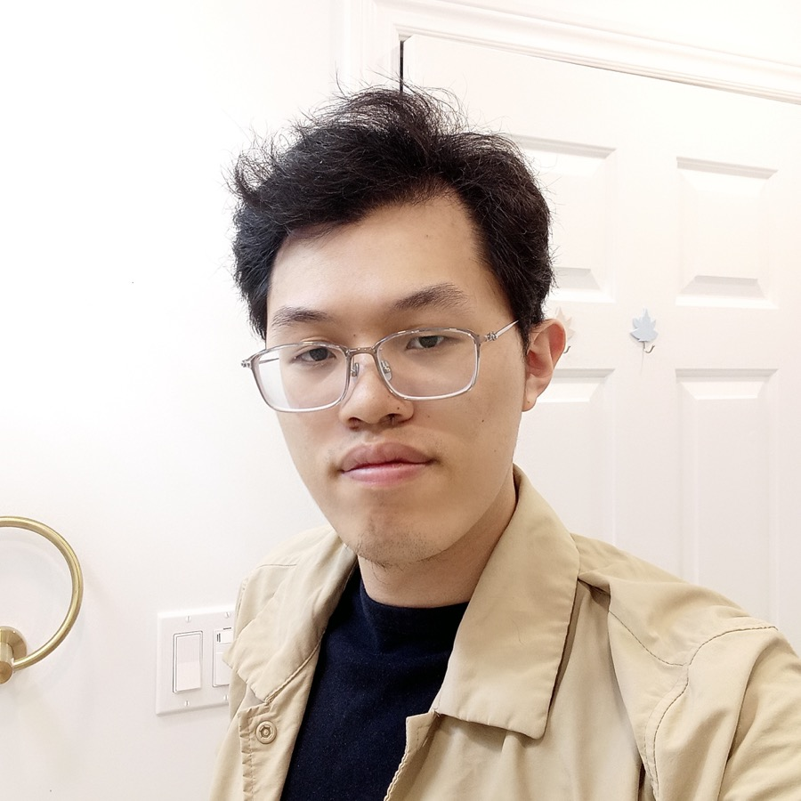
MASc Student
Ahmed is a PhD student in the Department of Electrical and Computer Engineering at the University of Waterloo. Before that, he received his BSc in 2025 and was an undergraduate researcher in the SEAD group at the American University in Cairo. Outside work, he enjoys racing, soccer, pool, gaming, chess, and weightlifting, among other things. He also listens to a lot of music and reads about psychology, history (especially technical history), and classic literature.
Marwan graduated from McMaster University with a BEng in Electrical and Biomedical Engineering in 2021. During his undergraduate degree, he completed a 16-month co-op at AMD, working on RTL design for hardware blocks within the graphics core. Following graduation, Marwan returned to AMD, where he worked in RTL and modeling roles before beginning graduate studies in 2025. His research interests lie in computer architecture and digital hardware design. Outside work, Marwan enjoys soccer, fencing, and video games.
Balaji Venkatesh is a part-time MASc student in the Department of Electrical and Computer Engineering at the University of Waterloo. His research interests include reconfigurable computing and computer networks. He holds a BASc in Engineering Science from the University of Toronto, specializing in Computer Engineering.
Balaji is also a full-time Software Analyst at Hitachi Rail Canada. There, he develops safety-critical software for automated rail projects. Outside research and work, he enjoys volleyball, model railroading, and tinkering with 3D printers and mechanical keyboards.
Thomas is a PhD student in the Department of Electrical and Computer Engineering at the University of Waterloo. He earned his BSc with the highest honors in Electronics and Computer Engineering and a minor in Computer Science from the American University in Cairo (AUC) in 2025. His research interests include AI acceleration, reconfigurable computing architectures, and hardware–software co-design. He was an undergraduate researcher in the SEAD group at AUC. His thesis work was supervised through the Center of Nanoelectronics and Devices (CND) and sponsored by Valeo.
Outside academics, Thomas enjoys gaming, martial arts, music production, television series and anime, table tennis, and chess. He listens to many genres of music, particularly classical and rock, and enjoys reading and debating philosophy, especially metaphysics.
Kerry graduated from the University of Toronto with an Honours BSc in Computer Science in 2023. During his undergraduate degree, he completed a 12-month internship at AMD, working on RTL design verification, and returned full-time after graduation. In 2025, he began graduate studies at the University of Toronto before transferring to the University of Waterloo in 2026 to pursue a MASc. Kerry’s research interests are in FPGA CAD algorithms and architecture. In his free time, he enjoys video games and badminton.
Our research is generously supported by: